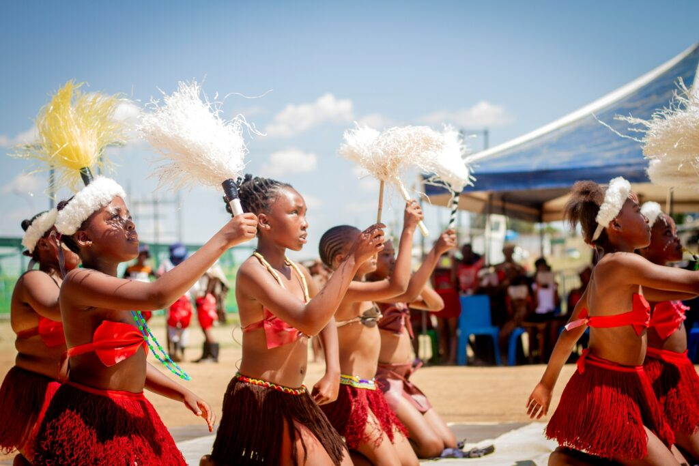
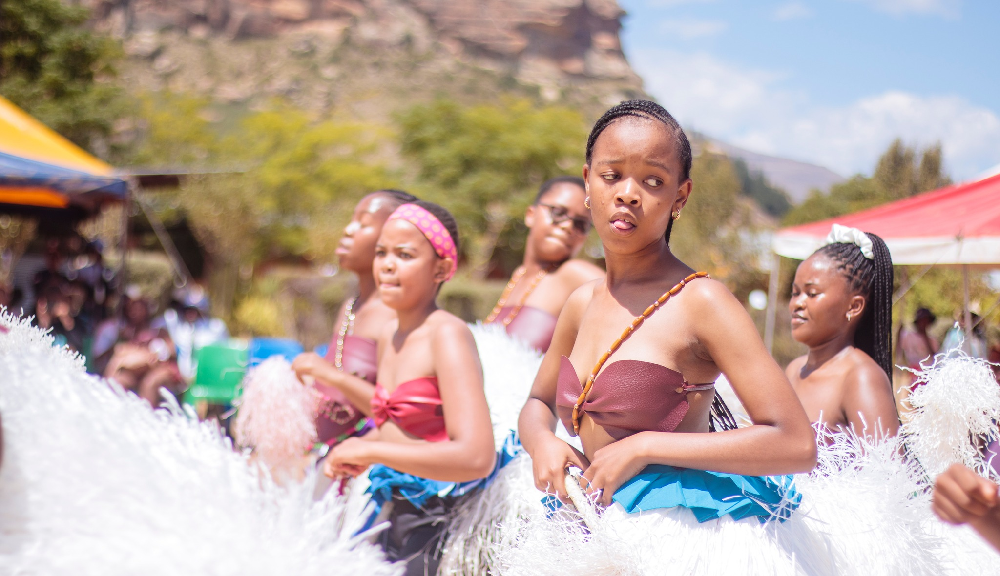

Event Overview
Welcome to the Lesotho Cultural Heritage Festival, a spectacular celebration of Basotho traditions, music, dance, and cuisine. This annual event brings together local communities and international visitors to experience the vibrant culture and warm hospitality that makes Lesotho unique.
📅 Event Date
March 25-27, 2026
Three days of cultural immersion and entertainment
📍 Location
Maseru Showgrounds
Capital City, Lesotho
Near the iconic Mokorotlo Mountain
🎯 Target Audience
• Local Basotho communities
• International tourists
• Cultural enthusiasts
• Families and students
What to Expect
🎭 Traditional Performances
Witness mesmerizing traditional dances including the famous Mohobelo and Mokorotlo dances, performed by skilled artists in authentic Basotho attire.
🍽️ Culinary Delights
Savor traditional Basotho cuisine including Moroho, Papa, and local delicacies prepared by renowned chefs from across the kingdom.
🎨 Art & Craft Exhibition
Explore exquisite Basotho crafts, from traditional blankets (Mokorotlo) to handmade pottery and beadwork created by local artisans.
🎵 Music Festival
Enjoy live performances by celebrated Basotho musicians, featuring traditional instruments like the lesiba and modern fusion sounds.
Featured Attractions

Traditional Dance Competition
Watch cultural groups compete in various traditional dance categories, showcasing the diversity of Basotho performing arts.

Heritage Exhibition
Discover the rich history of Lesotho through interactive displays, historical artifacts, and storytelling sessions with elders.
Traditional Basotho Cuisine
Experience the authentic flavors of Lesotho! Our food festival features traditional recipes passed down through generations, prepared with love and served with Basotho hospitality.
.jpg)
Qhubu
Traditional sorghum porridge, a staple food enjoyed by Basotho families. Nutritious and filling, often served with milk or sugar.
.jpg)
Motoho
A refreshing fermented sorghum drink, slightly tangy and perfect for hot days. Rich in probiotics and traditional nutrients.
.jpg)
Nyekoe
Sweet pumpkin porridge made with locally grown pumpkins, seasoned with spices and enjoyed as a breakfast or dessert.
.jpg)
Likhets'o
Traditional spinach dish cooked with onions, tomatoes, and spices. A nutritious side dish perfect with Papa (maize porridge).
Why Visit Lesotho?
Known as the "Kingdom in the Sky," Lesotho offers breathtaking mountain landscapes, unique cultural experiences, and warm hospitality. This festival is your gateway to experiencing authentic Basotho culture while enjoying the stunning natural beauty of our mountain kingdom.